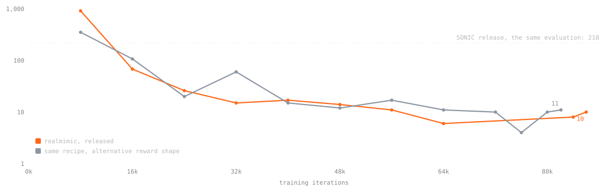
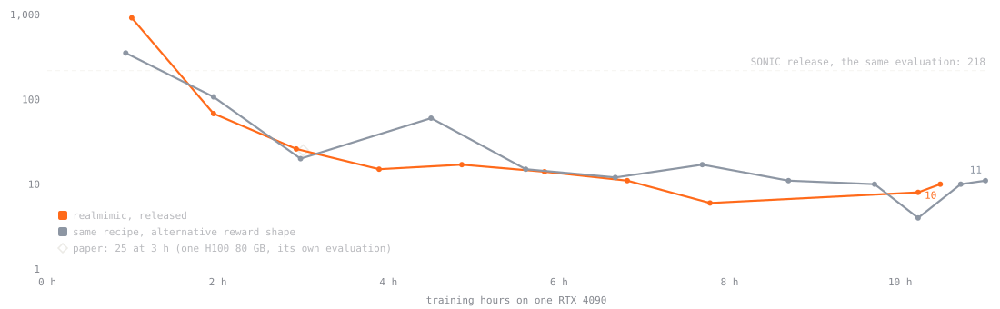
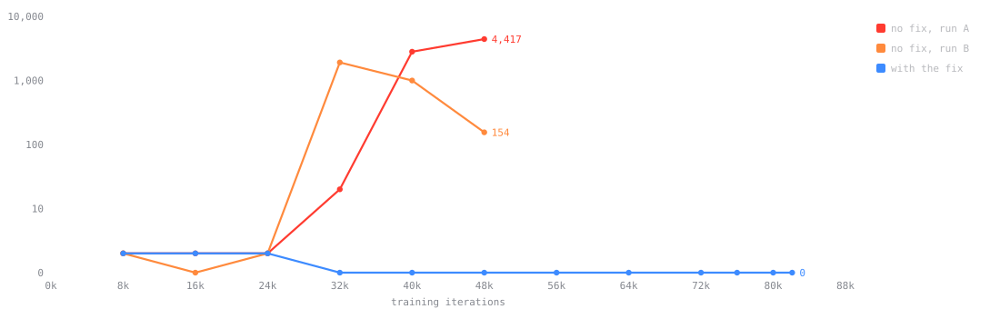

Drag the robot to push it · drag anywhere else to turn the view · scroll to zoomDrag the robot to push it · drag elsewhere to turn the view · pinch to zoom
Recorded · released policy
Motion Data by Bones Studio · rendered in this scene
Booting simulation0 %
Everything runs in your browser: no server; the physics and the policy run on your CPU.
Live sim
Sim time
--
Step time
--
FPS
--▮
Same policy on every robot.
Push force
0 N
Push test
m/s
World model
-- cm apart now
-- cm apart after 0.64 s
Average distance between the blue robot's body parts and the solid robot's. Every 0.64 s (the length of the training rollouts, vertical lines) the blue robot is reset to the solid one.
Physics simulator (MuJoCo)
Loading the world model…
Target posePolicy
In your browserThe released policy (16-bit weights) running in MuJoCo 3.16, compiled to WebAssembly, with the training physics settings. Nothing runs on a server.
Try itDrag the robot or use the push test; the white outline is the target pose. It tracks body pose, not position, so it drifts slowly.
World modelThe translucent blue robot is the learned model the policy was trained in, predicting the motion by itself; every 0.64 s it is reset to the simulated robot. Pushes and drags are outside its training data.
Load your ownA BONES-SEED G1 CSV, a header-less G1 CSV at 30 fps or a realmimic .npz, with the rights to use it. It never leaves your browser.
01What this is
Training on one RTX 4090.uv run sm-train release reproduces the released model. The paper trained on one H100 80 GB; fitting 24 GB next to the motion library meant halving the policy batch to 2048.
The paper's benchmark on all 129,491 motion clips, with NVIDIA SONIC's released policy scored the same way.
A path to the robot. Your G1 as a config file (hands, payloads), deployed inside NVIDIA's SONIC runtime and planner, unforked, with safety patches, and tested in simulation against the real deploy program.
What this is not
Not the paper's numbers: everything here is our own evaluation unless it says otherwise.
Hardware: early supervised tests on a real G1 are under way. Deploy weights and hardware results will follow in v1.1.
02Results
We use the paper's benchmark (its Appendix F): every clip of the BONES-SEED dataset that passes the paper's filter, 129,491 clips, each played once from its first frame. A clip fails if the robot falls: pelvis height off by more than 0.25 m or its tilt by more than 0.8 (difference in the upward component of gravity in the pelvis frame) from the reference. Our policy and SONIC's released policy run in the same evaluator (MuJoCo Warp, mjlab), each with its own motor gains. The paper's figures come from its own evaluation and are quoted as reported.
–– of – motions completed– failed · tracking score – (average normalised tracking reward; 1 = perfect)released model · one RTX 4090, 10.5 h
–– of – completed– failed · SONIC release, the same evaluation for both
–– of – completed– failed · SuperMimic paper, one H100 80 GB, 3 h, as reported (its own evaluation)
Side by side with SONIC's released policy
Same clip, same reference: ours on the left, SONIC's release on the right.
realmimicon trackSONIC releaseon track
A flip with a hero landing Ours completes it; SONIC's release falls at 1.4 s.
realmimicon trackSONIC releaseon track
A 360 flip Ours completes it; SONIC's release falls at 2.4 s.
realmimicon trackSONIC releaseon track
A vogue dance drop Ours completes it; SONIC's release falls at 4.7 s.
realmimicon trackSONIC releaseon track
A back-kick dance move Ours completes it; SONIC's release falls at 2.7 s.
realmimicon trackSONIC releaseon track
A high jump Ours completes it; SONIC's release falls at 2.2 s.
realmimicon trackSONIC releaseon track
A broad jump Ours completes it; SONIC's release falls at 4.4 s.
Hardware: early supervised tests on a real G1 are under way. Deploy weights and hardware results will follow in v1.1.
Training data includes Motion Data by Bones Studio (https://bones.studio/). Use of the underlying dataset is subject to the BONES Motion Capture Dataset License Agreement.
All six clips are from BONES-SEED. The faint outline is the reference; the translucent blue robot on our side is the world model the policy was trained in, predicting the motion and reset to the simulated robot every 0.64 s, as in the live demo. The labels mark when a robot goes off track (the benchmark's failure) or falls.
Full-benchmark results for every run
None of these failures happens on a clip's last frame. Across the two seeds the final checkpoint fails 4 to 10 clips. Re-running one checkpoint with a different number of parallel simulations moves the failure count by about ±10 (at ~200 failures), so differences under 20 are within measurement noise.
Training curve


All 129,491 clips scored every 8,000 training iterations (on RTX 6000 Ada and RTX 5000 Ada GPUs). The paper's point is as reported, from its own evaluation.
Failures by motion type
Show the table
The paper's Table A.8 groups, recovered from motion-category names; group sizes are ours.
Two problems in the open reimplementation we started from decide the result at full data scale; the paper specifies neither.
1. Training rarely practised the hardest motions
Flips still failing on the 130 hardest clips at 12k iterations; the two runs in each pair differ in the estimate alone.
Training starts episodes in 1-second pieces of clips, preferring pieces it tracks badly. The inherited estimate of "badly" started every piece at the best possible score and moved 5 % per visit, so with ~1 million pieces the rare acrobatic ones kept looking easy, while every clip's last second looked hard. Flips and side rolls got half of a fair share of practice.
Fix: a running mean that counts visits and assumes the worst for unvisited pieces, with a continuation value at clip ends. Effect: on the 130 hardest clips, all 54 flips and 22 side rolls are learned by 6k iterations; with the old estimate, 5 to 12 flips still failed at 12k.
2. Nothing in the training objective covered the end of a clip

Failures on a clip's last frames, full set, against training iterations: two runs without the fix (A, B), one with it.
The learned-model rollouts stopped 32 frames before the end, so long runs learned to fall on the final frame. That costs almost nothing in the score but counts as a failure: at 40k iterations one such run had 2,882 failures, 2,802 on the last frame, still rising (4,417 at 48k).
Fix: past the end, the reference holds the last frame still and the rollouts run into it. The released model has no last-frame failures.
What did not matter measurably
03Deployment, in simulation
Before a policy touches a robot, we run it inside NVIDIA SONIC's actual deploy program, the binary that runs on the G1, connected to a MuJoCo simulation of a G1 with BrainCo hands. Each session walks, turns, squats, kneels and stands up through SONIC's planner, with pushes, sensor errors and 10 to 20 ms command delays. Our released tracker is first fine-tuned for this robot. Means over five sessions:
Policy
Falls
Joint tracking error (rad)
Body tilt error (rad)
Ankle motor load (Nm)
Waist motor load (Nm)
SONIC's released policy
0
0.083
0.052
4.48
3.31
realmimic, fine-tuned for the robot
0
0.075
0.008
3.32
2.86
A second training seed gives no falls, 0.069 rad, 0.008 rad, 4.23 Nm and 3.34 Nm. Without the fine-tune, the released tracker falls once under command delay on this robot model. The fine-tune recipe comes with v1.1.
You need: Linux, an NVIDIA GPU with 24 GB (training; evaluation works on smaller GPUs), NVIDIA driver 580 or newer, about 170 GB of free disk for the data, uv, and a Hugging Face account.
git clone https://github.com/kevinhenryzz/realmimic && cd realmimic
uv sync --group dev # Python 3.12 and every dependency, pinned by uv.lock
uv run hf auth login # once; a read token from https://huggingface.co/settings/tokens
tools/download_data.sh # BONES-SEED (accept its licence on Hugging Face first) and LAFAN1
tools/prepare_data.sh # convert, filter, build the training library and the benchmark lists
uv run sm-train release # train the released model's recipe (one RTX 4090, about 10.5 h)
running input normalisation and LayerNorm; falls detected from the state
inherited from the reimplementation we started from
Self-collision
—
on
the robot's limbs can collide with each other
Motor gains. Training uses mjlab's default G1 model, with the hip-pitch motors (Unitree 7520-14) at stiffness kp ≈ 40, the low-gain setup the paper builds on; SONIC's runtime uses kp 99 on the same joints. The benchmark scores each policy under its own gains, as in the paper's Appendix F.1.
Our evaluation counts about 1.2× more failures than the paper's for the same policy (SONIC: 218 vs 179).
As in the paper, the benchmark replays the clips the policy was trained on; LAFAN1 above measures motion it never saw.
Compute
The released model trains on one RTX 4090 in 10.5 hours. Developing and checking it took more; measured GPU-hours (wall-clock hours × GPUs, from the training and evaluation logs):
Method: SuperMimic, Q. Liao et al., CoRL 2026 (arXiv:2610.28480). This project is not affiliated with its authors.
Runtime: NVIDIA GR00T-WholeBodyControl / SONIC (Apache-2.0), used unforked; the release policy and planner weights are under the NVIDIA Open Model License and are downloaded by script.
Training data includes Motion Data by Bones Studio (https://bones.studio/). Use of the underlying dataset is subject to the BONES Motion Capture Dataset License Agreement.
LAFAN1 (CC BY-NC-ND 4.0) is used for evaluation, never for training, and is never redistributed.
Robot model: Unitree G1 from mjlab (Apache-2.0), based on Unitree Robotics' G1 description (BSD-3-Clause). BrainCo hand meshes: Unitree's unitree_ros g1_with_brainco_hand model (BSD-3-Clause).
The data used in this project was obtained from mocap.cs.cmu.edu. The database was created with funding from NSF EIA-0196217.
Walking styles: retargeted and trimmed from the 100STYLE dataset by Ian Mason, Sebastian Starke and Taku Komura (“Real-Time Style Modelling of Human Locomotion via Feature-Wise Transformations and Local Motion Phases”, 2022), licensed under CC BY 4.0; changes: retargeted to the G1, foot sliding removed, 10 s excerpts with a short stop added at the end.
The RTX 4090 beside the title: site/assets/gpu/rtx4090.glb is CC BY-NC 4.0 by exéla (https://skfb.ly/oyBLN), modified (lettering painted out, label turned upright, compressed); it is not covered by the repository's Apache-2.0 licence.
NVIDIA, GeForce and RTX are trademarks of NVIDIA Corporation. This project is not affiliated with or endorsed by NVIDIA.
@software{henry2026realmimic,
author = {Henry, Kevin},
title = {realmimic: a single-GPU reproduction of SuperMimic with deployment in NVIDIA's SONIC runtime},
year = {2026},
url = {https://github.com/kevinhenryzz/realmimic}
}
@article{liao2026supermimic,
author = {Liao, Qiayuan and Shao, Yiyang and Long, Junfeng and Zakka, Kevin and Horowitz, Roberto and Abbeel, Pieter and Sreenath, Koushil},
title = {SuperMimic: Scaling Humanoid Whole-Body Control with One Differentiable World Model},
journal = {arXiv preprint arXiv:2610.28480},
year = {2026}
}